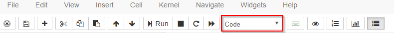
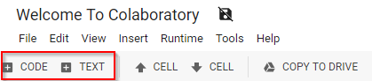
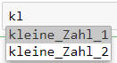

Einführung Jupyter Notebooks
Inhalt
Einführung Jupyter Notebooks¶
Alle Jupyter Notebooks (gilt auch für google colab, auch wenn die Darstellung dort etwas abweichend ist) bestehen aus Zellen. Jeglicher Inhalt - inklusive dieses Textes - befindet sich in einer Zelle.
Es muss dabei zwischen zwei Arten von Zellen unterschieden werden:
Text-Zellen und
Code-Zellen
Markdown und Code Zellen¶
Die bisherigen Zellen waren alle Markdown-Zellen und beinhalten deshalb nur Text. Markdown ist eine vereinfachte Auszeichnungssprache, die zum Ziel hat ohne große Formatierung und Konvertierung gut und leicht lesbaren Text zu produzieren. Sie wird vor allem auf Plattformen wie GitHub oder Stackoverflow oder von Webbloggern genutzt.
Markdown ermöglicht es Bilder:
oder Formeln
einzubetten
Weiterführende Links zu Markdown:
Neben den o.g. Markdown-Zellen gibt es sog. Code-Zellen. In diesen wird der Programmcode geschrieben und ausgeführt. In unserem Falle handelt es sich dabei um Python-Code.
So ist die nachfolgende Zelle bspw eine Code-Zelle:
3 + 3
6
Wie man sehen kann wird in der Zelle die Berechnung 3 + 3 durchgeführt. Das Ergebnis =6 wird dann direkt darunter ausgegeben.
Wir können also in einem Word-ähnlichen Dokument programmieren.
Wechseln von Zellen-Typ¶
Zwischen Markdown und Code Zellen kann ganz einfach gewechselt werden durch ESC + M für Markdown und ESC + Y für Code. Alternativ kann auch das Menü genutzt werden
Menü: Jupyter Notebooks

Menü: Google Colab

Hinweis: die Tastenkombinationen sowie die Menüleiste (siehe oben) sind in Google Colab teilweise etwas abweichend. Jedoch können die Tastenkombinationen selber festgelegt werden. Außerdem ist das Menü relativ intuitiv und selbsterklärend, so dass die Erläuterungen in diesem Notebook ausreichend sein sollten.
Einfügen von Zellen¶
Der große Vorteil von Jupyter Notebooks ist - neben der Integration von Textverarbeitung und Progammcode - die ermöglichte explorative Vorgehensweise bei der Durchführung von Analysen. Der Code eines Jupyter Notebooks muss nicht sequentiell ausgeführt werden, sondern man kann in jede beliebige Zelle springen und diese ausführen.
Darüber hinaus können Zellen vor oder nach jeder belieben Zelle eingefügt werden. Dies erfolgt wieder enweder über das Menü oder über die Tastenkürzel ESC + A (Zelle oberhalb der selektierten Zelle einfügen) oder ESC + B (Zelle unterhalb der selektierten Zelle einfügen.
Ausführen von Zellen¶
Jede Zelle - unabhängig davon, ob Markdown oder Code Zelle, kann u.a. durch die Tastenkombination shift + ENTER ausgeführt werden. Alle Code Zellen liefern immer eine Out Zelle mit, in welcher das Ergebnis dargestellt wird.
9 + 12
21
Ein Ergebnis wird jedoch immer nur dann ausgegeben, wenn die letzte Zeile der Code-Zelle einen Output hat. Dies ist nicht der Fall, wenn z.B. das Ergebnis einer Rechnung in einer Variable festgehalten wird (hierzu später mehr).
Beispiel: Hier wird kein Ergebnis ausgegeben, sondern in der Variable “ergebnis” gespeichert
ergebnis = 9 + 12
Es kann dann aber die Varialbe “ergebnis” ausgegeben werden.
ergebnis
21
Beispiel: hier ein weiteres Beispiel. Es wird nur die letzte Zeile ausgegeben, da diese einen Output hat. Die beiden vorangegangenen Berechnungen gehen “verloren”, weil diese weder ausgegeben noch gespeichert werden
5 + 7
3 + 12
4 - 2
2
a = 5 + 7
b = 3 + 12
c = 4 - 2
b
15
Beispiel: das Print-Statement sorgt dafür, dass auch andere Zeilen ausgegeben werden.
print(a)
print(b)
c
12
15
2
Nutzung von Zellergebnissen¶
Ergebnisse von Zellen können überall im Notebook weiterverwendet werden. So wurde z.B. einige Zellen vorab
b = 3 + 12 definiert (= 15). Die Variable b kann dann einfach in einer anderen Zelle weitergenutzt werden.
b + 10
25
Tab Completion¶
Mit Hilfe von tab completion werden die bereits definierten bzw. verwendeten Variablen angezeigt. Hat man bspw. zwei Variablen im Notebook definiert
kleine_Zahl_1 = 12
kleine_Zahl_2 = 15
So kann man durch eingabe von kl + tab eine Vorschlagsliste erhalten, in dem die bereits definierten Variablen aufgeführt sind.

Probieren Sie es aus….
kleine_Zahl_1 = 12
kleine_Zahl_2 = 15
Kommentare in Code-Zellen¶
Es ist möglich Kommentare in Code-Zellen einzufügen - auch wenn das in Jupyter Notebooks oft nicht nötig ist, da die Kommentierung auch über die Markdown Zellen erfolgen kann. Die Kommentarfunktion ist abhängig von der Programmiersprache und damit vom Kernel, der genutzt wird. In unserem Fall kann deshalb das “#” aus Python genutzt werden.
# hier wird eine wichtige Berechnung durchgeführt
3 / 2
1.5